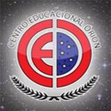

Curriculo
Experiencias
-
VaiFacil
08/2020 - Atual
Como desenvolvedor na Vai Fácil sou responsável, junto da equipe de TI, por fazer a manutenção e desenvolvimento da plataforma logística, bem como suas ferramentas de tecnologia internas e externas.
-
SuperGeeks
11/2018 - 08/2020
Ensinar Ciência da Computação de forma divertida, fazendo nossos alunos pensarem de forma criativa, raciocinarem de forma sistêmica e trabalharem de forma colaborativa, assim, levando o conhecimento de tecnologia e diversas outras habilidades para o maior número de pessoas possível e ajudando o Brasil a se tornar referência em tecnologia.
-
Microrio
05/2015 - 09/2015
A Microrio Escola de Profissões é uma empresa do ramo educacional especializada em preparar pessoas e formar profissionais para o mercado de trabalho. Oferecemos a formação em Informática Profissional, Montagem e Manutenção de Computadores, Redes, Rotinas Administrativas, Maquiagem e Inglês.
Educacao
-
 Universidade Veiga de Almeida
Universidade Veiga de Almeida
2017 - 2022
Bacharelado Ciência da Computação
A Universidade Veiga de Almeida está entre as 6 melhores universidades privadas do país, sendo uma das mais tradicionais instituições de ensino superior.
-
Rocketseat
03/2020 - 08/2020
Rocketseat Bootcamp GoStack NodeJS,Typescript, React, React Native
Bootcamp intensivo das tecnologias mais mordernas do ecossitema Javascript, como NodeJs, React e ReactNative.
-
 Centro Educacional Órion
2014 - 2016
Centro Educacional Órion Ensino Médio Técnico Tecnologia da Informação
Hoje, o CEO e a Casinha Feliz, oferecem o Ensino Fundamental completo, em seus dois segmentos, o Ensino Médio Regular e Técnico em Informática e Enfermagem, além da Educação Infantil. Como atividades extracurriculares o CEO mantém a Banda Marcial, as escolinhas de Futsal, Judô, Jazz e Natação e realiza anualmente a Olimpíada Órion, valorizando o desenvolvimento físico e a competitividade esportiva.